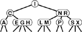
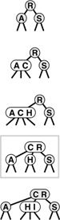
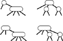
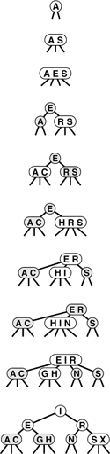
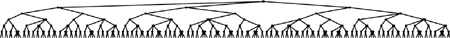

C++ Programming Robert Sedgewick - Princeton University Addison Wesley Professional Algorithms in C++, Parts 1–4: Fundamentals, Data Structure, Sorting, Searching, Third Edition
13.3. Top-Down 2-3-4 Trees
Despite the performance guarantees that we can provide with randomized BSTs and with splay BSTs, both still admit the possibility that a particular search operation could take linear time. They therefore do not help us answer the fundamental question for balanced trees: Is there a type of BST for which we can guarantee that each and every insert and search operation will be logarithmic in the size of the tree? In this section and Section 13.4, we consider an abstract generalization of BSTs and an abstract representation of these trees as a type of BST that allows us to answer this question in the affirmative.
To guarantee that our BSTs will be balanced, we need flexibility in the tree structures that we use. To get this flexibility, let us assume that the nodes in our trees can hold more than one key. Specifically, we will allow 3-nodes and 4-nodes, which can hold two and three keys, respectively. A 3-node has three links coming out of it: one for all items with keys smaller than both its keys, one for all items with keys in between its two keys, and one for all items with keys larger than both its keys. Similarly, a 4-node has four links coming out of it: one for each of the intervals defined by its three keys. The nodes in a standard BST could thus be called 2-nodes: one key, two links. Later, we shall see efficient ways to define and implement the basic operations on these extended nodes; for now, let us assume that we can manipulate them conveniently, and see how they can be put together to form trees.
Definition 13.1. |
A 2-3-4 search tree is a tree that either is empty or comprises three types of nodes: 2-nodes, with one key, a left link to a tree with smaller keys, and a right link to a tree with larger keys; 3-nodes, with two keys, a left link to a tree with smaller keys, a middle link to a tree with key values between the node's keys and a right link to a tree with larger keys; and 4-nodes, with three keys and four links to trees with key values defined by the ranges subtended by the node's keys
|
Definition 13.2. A balanced 2-3-4 search tree is a 2-3-4 search tree with all links to empty trees at the same distance from the root|
In this chapter, we shall use the term 2-3-4 tree to refer to balanced 2-3-4 search trees (it denotes a more general structure in other contexts). Figure 13.10 depicts an example of a 2-3-4 tree. The search algorithm for keys in such a tree is a generalization of the search algorithm for BSTs. To determine whether a key is in the tree, we compare it against the keys at the root: If it is equal to any of them, we have a search hit, otherwise, we follow the link from the root to the subtree corresponding to the set of key values containing the search key, and recursively search in that tree. There are a number of ways to represent 2-, 3-, and 4-nodes and to organize the mechanics of finding the proper link; we defer discussing these solutions until Section 13.4, where we shall discuss a particularly convenient arrangement.
This figure depicts a 2-3-4 tree that contains the keys A S R C H I N G E X M P L. We can find a key in such a tree by using the keys in the node at the root to find a link to a subtree, then continuing recursively. For example, to search for P in this tree, we would follow the right link from the root, since P is larger than I, follow the middle link from the right child of the root, since P is between N and R, then terminate the successful search at the 2-node containing the P.

|
To insert a new node in a 2-3-4 tree, we could do an unsuccessful search and then hook on the node, as we did with BSTs, but the new tree would not be balanced. The primary reason that 2-3-4 trees are important is that we can do insertions and still maintain perfect balance in the tree, in every case. For example, it is easy to see what to do if the node at which the search terminates is a 2-node: We just turn the node into a 3-node. Similarly, if the search terminates at a 3-node, we just turn the node into a 4-node. But what should we do if the search terminates at a 4-node? The answer is that we can make room for the new key while maintaining the balance in the tree, by first splitting the 4-node into two 2-nodes, passing the middle key up to the node's parent. These three cases are illustrated in Figure 13.11.
A 2-3-4 tree consisting only of 2-nodes is the same as a BST (top). We can insert C by converting the 2-node where the search for C terminates into a 3-node (second from top). Similarly, we can insert H by converting the 3-node where the search for it terminates into a 4-node (third from top). We need to do more work to insert I, because the search for it terminates at a 4-node. First, we split up the 4-node, pass its middle key up to its parent, and convert that node into a 3-node (fourth from top, highlighted). This transformation gives a valid 2-3-4 tree containing the keys, one that has room for I at the bottom. Finally, we insert I into the 2-node that now terminates the search, and convert that node into a 3-node (bottom).

Now, what do we do if we need to split a 4-node whose parent is also a 4-node? One method would be to split the parent also, but the grandparent could also be a 4-node, and so could its parent, and so forth—we could wind up splitting nodes all the way back up the tree. An easier approach is to make sure that the search path will not end at a 4-node, by splitting any 4-node we see on the way down the tree.
Specifically, as shown in Figure 13.12, every time we encounter a 2-node connected to a 4-node, we transform the pair into a 3-node connected to two 2-nodes, and every time we encounter a 3-node connected to a 4-node, we transform the pair into a 4-node connected to two 2-nodes. Splitting 4-nodes is possible because of the way not only the keys but also the links can be moved around. Two 2-nodes have the same number (four) of links as a 4-node, so we can execute the split without having to propagate any changes below (or above) the split node. A 3-node is not changed to a 4-node just by the addition of another key; another pointer is needed also (in this case, the extra link provided by the split). The crucial point is that these transformations are purely local: No part of the tree needs to be examined or modified other than the part shown in Figure 13.12. Each of the transformations passes up one of the keys from a 4-node to that node's parent in the tree, and restructures links accordingly.
In a 2-3-4 tree, we can split any 4-node that is not the child of a 4-node into two 2-nodes, passing its middle record up to its parent. A 2-node attached to a 4-node (top left) becomes a 3-node attached to two 2-nodes (top right), and a 3-node attached to a 4-node (bottom left) becomes a 4-node attached to two 2-nodes (bottom right).

On our way down the tree, we do not need to worry explicitly about the parent of the current node being a 4-node, because our transformations ensure that, as we pass through each node in the tree, we come out on a node that is not a 4-node. In particular, when we reach the bottom of the tree, we are not on a 4-node, and we can insert the new node directly by transforming either a 2-node to a 3-node or a 3-node to a 4-node. We can think of the insertion as a split of an imaginary 4-node at the bottom that passes up the new key.
One final detail: Whenever the root of the tree becomes a 4-node, we just split it into a triangle of three 2-nodes, as we did for our first node split in the preceding example. Splitting the root after an insertion is slightly more convenient than is the alternative of waiting until the next insertion to do the split because we never need to worry about the parent of the root. Splitting the root (and only this operation) makes the tree grow one level higher.
Figure 13.13 depicts the construction of a 2-3-4 tree for a sample set of keys. Unlike standard BSTs, which grow down from the top, these trees grow up from the bottom. Because the 4-nodes are split on the way from the top down, the trees are called top-down 2-3-4 trees. The algorithm is significant because it produces search trees that are nearly perfectly balanced, yet it makes only a few local transformations as it walks through the tree.
This sequence depicts the result of inserting items with keys A S E R C H I N G X into an initially empty 2-3-4 tree. We split each 4-node that we encounter on the search path, thus ensuring that there is room for the new item at the bottom.

Property 13.6. Searches in N-node 2-3-4 trees visit at most lg N+ 1nodes|
Every external node is the same distance from the root: The transformations that we perform have no effect on the distance from any node to the root, except when we split the root (in this case the distance from all nodes to the root is increased by 1). If all the nodes are 2-nodes, the stated result holds, since the tree is like a full binary tree; if there are 3-nodes and 4-nodes, the height can only be lower.
|
Property 13.7. Insertions into N-node 2-3-4 trees require fewer than lg N + 1 node splits in the worst case, and seem to require less than one node split on the average|
The worst that can happen is that all the nodes on the path to the insertion point are 4-nodes, all of which will be split. But in a tree built from a random permutation of N elements, not only is this worst case unlikely to occur, but also few splits seem to be required on the average, because there are not many 4-nodes in the trees. For example, in the large tree depicted in Figure 13.14, all but two of the 4-nodes are on the bottom level. Precise analytic results on the average-case performance of 2-3-4 trees have so far eluded the experts, but it is clear from empirical studies that very few splits are used to balance the trees. The worst case is only lg N, and that is not approached in practical situations.
|
This 2-3-4 tree is the result of 200 random insertions into an initially empty tree. All search paths in the trees have six or fewer nodes.

The preceding description is sufficient to define an algorithm for searching using 2-3-4 trees that has guaranteed good worst-case performance. However, we are only half of the way to an implementation. Although it would be possible to write algorithms which actually perform transformations on distinct data types representing 2-, 3-, and 4-nodes, most of the tasks that are involved are inconvenient to implement in this direct representation. As in splay BSTs, the overhead incurred in manipulating the more complex node structures could make the algorithms slower than standard BST search. The primary purpose of balancing is to provide insurance against a bad worst case, but we would prefer the overhead cost for that insurance to be low and we also would prefer to avoid paying the cost on every run of the algorithm. Fortunately, as we will see in Section 13.4, there is a relatively simple representation of 2-, 3-, and 4-nodes that allows the transformations to be done in a uniform way with little overhead beyond the costs incurred by standard binary-tree search.
The algorithm that we have described is just one possible way to maintain balance in 2-3-4 search trees. Several other methods that achieve the same goals have been developed.
For example, we can balance from the bottom up. First, we do a search in the tree to find the bottom node where the item to be inserted belongs. If that node is a 2-node or a 3-node, we grow it to a 3-node or a 4-node, just as before. If it is a 4-node, we split it as before (inserting the new item into one of the resulting 2-nodes at the bottom), and insert the middle item into the parent, if the parent is a 2-node or a 3-node. If the parent is a 4-node, we split that node (inserting the middle node from the bottom into the appropriate 2-node), and insert the middle item into its parent, if the parent is a 2-node or a 3-node. If the grandparent is also a 4-node, we continue up the tree in the same way, splitting 4-nodes until we encounter a 2-node or a 3-node on the search path.
We can do this kind of bottom-up balancing in trees that have only 2- or 3-nodes (no 4-nodes). This approach leads to more node splitting during the execution of the algorithm, but is easier to code because there are fewer cases to consider. In another approach, we seek to reduce the amount of node splitting by looking for siblings that are not 4-nodes when we are ready to split a 4-node.
Implementations of all these methods involve the same basic recursive scheme, as we shall see in Section 13.4. We shall also discuss generalizations, in Chapter 16. The primary advantage of the top-down insertion approach that we are considering over other methods is that it can achieve the necessary balancing in one top-down pass through the tree.
|
 N
N